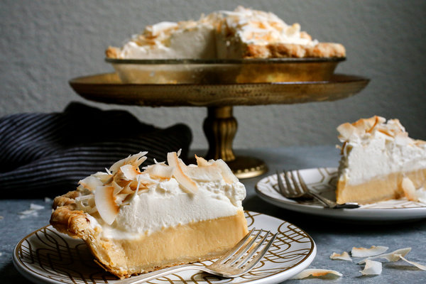

Coconut Cream Pie Recipe

Elite dish. Nothin' else to say.
Ingredients you'll need
- 1 Pie Crust
- 1/2 cup flaked sweetened coconut
- 1 1/2 cups canned coconut milk
- 1 1/2 cups half-and-half
- 5 egg yolks
- 3/4 cup sugar
- 4 tablespoons cornstarch
- 1 tablespoon butter
- 1/4 teaspoon salt
- 1 1/2 cups flaked sweetened coconut
- 1 1/2 teaspoons vanilla
- Whipped Cream
Steps
- Prepare pie crust according to blind-baking instructions of recipe.
- Spread coconut evenly on a rimmed baking sheet. Place into 350º F oven for 8-10 minutes until coconut has just begun to turn brown.
- Set aside to cool.
- Pour coconut milk and half-and-half into a liquid measuring cup. Add egg yolks and whisk together with milks. Set aside.
- Add sugar and cornstarch to a heavy-bottomed saucepan over medium-low heat. Whisk egg and milk mixture together once more and then slowly begin to add to the sugar and cornstarch, whisking together constantly.
- Bring custard mixture to a boil. Switch to a rubber spatula or wooden spoon and continue to stir constantly. Boil one minute.
- Remove from heat and add butter, coconut, vanilla and salt.
- Spread custard into pie crust. Cover lightly with plastic wrap and chill in the refrigerator until set, about 30-45 minutes.
- Spread whipped cream on top of coconut custard. Refrigerate until ready to serve.
- When ready to serve, top with toasted coconut.